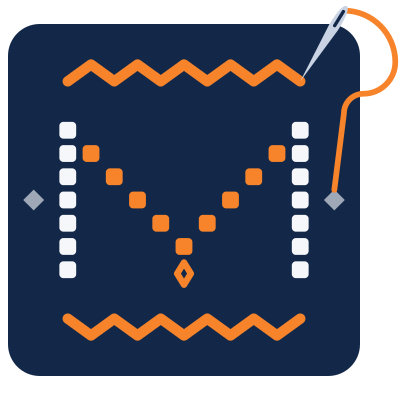

Prima si ascolta, poi si cuce.
Nessuna riga di codice prima di aver capito come lavori davvero, anche le cose che fai senza pensarci.

Il gestionale su misura · by Domotty
Ordini, clienti, magazzino, documenti e canali di vendita in un unico sistema, costruito sui processi della tua azienda. Punto per punto, come lo farebbe un mastro sarto.
Perché si chiama Maistu
ma·ì·stu sostantivo, sardo campidanese
Chi conosce il mestiere, lavora con le mani e fa le cose su misura. E il mastro che più ci somiglia è il sarto.
Il sarto non ti vende un abito già fatto. Ti ascolta, prende le misure, sceglie il tessuto e cuce punto dopo punto. Maistu fa lo stesso con la tua azienda: ordini, clienti, magazzino, documenti e canali intrecciati come in un tappeto sardo. Con AI CORE dentro, e Jana sempre pronta ad ascoltarti.

Tocca un segno per vederlo nel marchio
La filosofia
La maggior parte dei gestionali ti chiede di cambiare il tuo modo di lavorare per entrarci dentro. Noi facciamo il contrario.
Nessuna riga di codice prima di aver capito come lavori davvero, anche le cose che fai senza pensarci.
Un campo in più, un passaggio in meno: i dettagli piccoli sono quelli che fanno risparmiare ore ogni settimana.
Vendite, magazzino, documenti e clienti sono la stessa storia. Li teniamo insieme, senza copia e incolla.
Parti dai moduli che servono oggi. Domani si allarga, si aggiunge, si ritocca.
La visione
Nasce a San Sperate, nel cuore della Sardegna, dove il su misura è ancora un mestiere.
Tutto quello che fa girare l'azienda in un posto solo, accessibile da ufficio, negozio e telefono.
AI CORE fa il lavoro ripetitivo. Jana ti risponde quando hai le mani occupate.
Cosa fa
Sono il punto di partenza. Tutto il resto lo cuciamo su richiesta: ogni modulo che ti serve, costruito sul tuo modo di lavorare. Scegli un modulo e guarda cosa succede quando arriva un ordine.
Preventivi a più livelli, gestione delle commesse, noleggi, abbonamenti, produzione, tracciabilità dei lotti: se lo fai in azienda, possiamo cucirlo dentro Maistu.
Come funziona
Una simulazione per capire la logica: scegli un settore e menu, moduli e dati si adattano. Crea un ordine, guarda il magazzino scalare, chiedi qualcosa a Jana. La prova vera, con il tuo nome e i tuoi canali, la prepariamo noi.
Settore
Simulazione con dati inventati, salvata solo nel tuo browser.
Ti convince? Prepariamo un Maistu vero per la tua azienda, da provare per 15 giorni.
Richiedi la provaPrendo le misure…
Bar Centrale
Ristorazione · demo
L'assistente AI di Domotty
Jana è la nostra assistente AI. Le parli o le scrivi come a una collega: risponde, cerca, prepara e fa, dentro Maistu e, con la domotica Domotty, anche tra le mura del tuo negozio, del tuo ufficio o di casa.
jà·na sostantivo, sardo
Nel folklore sardo la jana è una fata: una piccola creatura magica e, in alcune tradizioni, una strega dei boschi. Le domus de janas, le "case delle fate" scavate nella roccia, portano il suo nome. Ci piaceva l'idea di una presenza piccola e discreta che lavora per te, e fa sembrare semplici le cose difficili.
In Maistu
Tra le tue mura
Dietro Jana c'è AI CORE, il motore di intelligenza artificiale di Maistu: lavora sui dati della tua azienda, non su risposte generiche, e fa da solo il lavoro ripetitivo.
Jana
In ascolto
Buongiorno! Sto preparando la tua giornata.
Per ogni settore
Ai moduli base aggiungiamo quelli del tuo mestiere. Qui ne vedi sette, ma sono solo esempi: Maistu si cuce su qualsiasi attività.
E ancora, solo per citarne alcuni
Come lavoriamo
Veniamo da te o ci sentiamo in video. Ci racconti come lavori, cosa ti fa perdere tempo e cosa non vuoi cambiare.
Prima settimanaMappiamo processi, documenti e numeri veri. Ne esce un cartamodello: cosa fa Maistu, per chi e in che ordine.
1–2 settimaneScegliamo i moduli base e quelli del tuo settore, e decidiamo cosa portare dentro dai programmi che usi oggi.
Insieme a teConfiguriamo e sviluppiamo quello che serve, importiamo i dati e colleghiamo canali e fatturazione elettronica.
Secondo il progettoLo usi per davvero, con noi accanto. Ritocchiamo finché non ti calza. Poi restiamo, per la manutenzione e per i ritocchi di domani.
E dopo, semprePiani e prezzi
Scegli la dimensione della tua azienda: ti indichiamo il piano giusto. Poi indica quante persone lo useranno e guarda il conto.
Su quotazione
Oltre 50 utenti o 250 addetti servono configurazioni, sedi e assistenza pensate apposta. Un nostro commerciale ti prepara la quotazione.
Prezzi IVA esclusa. Con la fatturazione annuale paghi 10 mesi su 12.
Aggiungili al piano scelto: il totale si aggiorna qui sopra. Questi sono i più richiesti, gli altri li costruiamo su misura.
Enterprise e licenza completa
Per gruppi con più società, installazione nei tuoi server o licenza perpetua del gestionale completo, prepariamo un'offerta su misura con un nostro commerciale.
La prova vera
Quando ci chiedi la demo, non ti diamo un account generico. Prepariamo un ambiente il più vicino possibile al tuo settore e al tuo modo di lavorare, e te lo lasciamo provare per due settimane, con noi accanto.
Compila il modulo qui sotto: settore, quante persone siete, cosa usate oggi.
Ti scriviamo cosa ci serve per prepararla (qualche prodotto, un listino, il logo, un esempio dei tuoi documenti) e come possiamo aiutarti a raccoglierlo.
Un Maistu con il tuo nome, i moduli del tuo settore e dati che somigliano ai tuoi. Non una vetrina: un gestionale da usare.
Se vuoi, attiviamo sulla demo anche WhatsApp, email, un numero di telefono o il centralino, il sito o un marketplace, per provarlo come nella realtà.
Quindici giorni per metterlo alla prova, con il nostro supporto. Alla fine decidi tu se proseguire. Se non prosegui, l'ambiente viene cancellato.
Domande frequenti
Sì. Importiamo clienti, prodotti, listini e storico da fogli Excel e dai gestionali più diffusi. Lo facciamo noi, durante la fase di cucitura.
Sì. Maistu emette fatture elettroniche e note di credito, le invia allo SDI e ne segue lo stato. Puoi anche condividerle con il tuo commercialista.
Nella versione cloud, su server in Unione Europea, con backup giornalieri. Con la licenza completa puoi installarlo anche nei tuoi server.
Certo. Molti clienti partono con ordini e magazzino e aggiungono documenti, canali o Jana nei mesi successivi.
Sì, da browser su computer, tablet e telefono. Per chi lavora fuori sede c'è anche l'app con le funzioni che servono in giro.
È l'assistente AI di Domotty. In Maistu risponde alle tue domande e svolge compiti al posto tuo, a voce o per iscritto. Con la domotica Domotty comanda anche luci, clima, scenari e sicurezza. Il nome viene dal sardo: la jana è la fata del folklore isolano.
Il team Domotty, da San Sperate. Al telefono, su WhatsApp o per email, con persone che conoscono il tuo progetto.
Parliamone
Richiedi la prova di 15 giorni o raccontaci semplicemente della tua azienda. Ti rispondiamo con un'email e fissiamo un primo incontro.